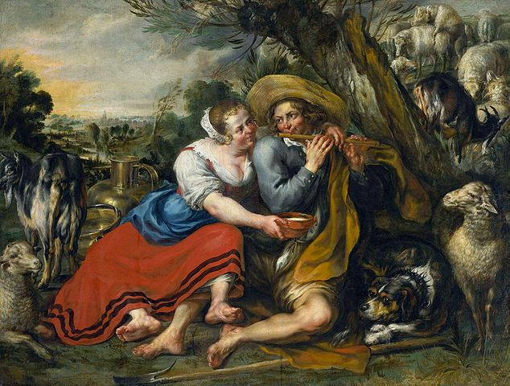

<!-- LATER: can have more pics from my book showing borth urban and rural -->
<!-- and then add gradient like with smiley faces and visualize the whole -->
<!-- thing lol -->
<!-- eg side by side: towers chcikens vampire tyen suburb and then pastoral -->
<!-- idyl lol :) just make a one such picture in Google doc copy paste :) -->

<dl>the urban-rural happiness gradient new or key writings:
<dt><a href="https://rucore.libraries.rutgers.edu/rutgers-lib/52123/PDF/1/play/">City Life: Glorification, Desire, and the Unconscious Size Fetish</a>
<dt><a href="https://sites.google.com/site/adamokuliczkozaryn/pubs/aok-urbanism-feb14-7pm.pdf">A Test of Wirth's Theory of Urban Life</a>
<dt><a href="https://books.google.com/books?id=19pTCgAAQBAJ&lpg=PP1&pg=PP1#v=onepage&q&f=false">Happiness and Place: Cities v Nature.  Why Life is Better Outside of the City?</a>
</dl>
